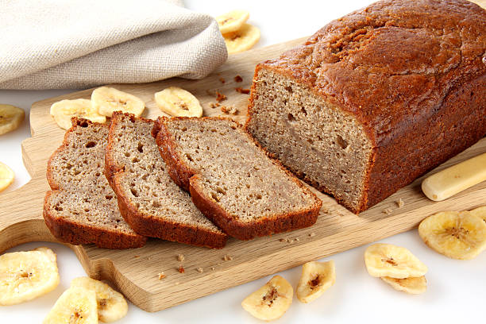

Banana bread
"Save that banana!"
This recipe is a great idea to revive those bananas that have been forgotten for who knows how long in the fruit basket, too ripe and of terrible consistency to be eaten like this.
Perfect as a snack, freshly baked they give off an amazing smell...
Imagine the slices of this bread, toasted and stuffed with jam or peanut butter, they are life.
Ingredients:
- 4 ripped banana
- 200 gr 00 flour
- 60 gr sugar
- 120 gr butter at room temperature
- 2 eggs
- 3gr baking soda
- 1 tsp cinnamon
- 1 pinch of salt
Instructions:
- Peel the bananas and cut them into small slices, mash them with a fork until they are reduced to a puree.
- In an another bowl, put the butter cut into pieces, together with the sugar.Work with electric whisks until you obtain a homogeneous mixture, then pour in an egg at a time, so as to incorporate them better. Add the baking powder and a pinch of salt, always keeping the whips in action.
- Add the banana puree and with a spatula mix it ultil it becomes omogeneous.
- Sift the flour directly into the bowl and add the baking soda and cinnamon, hen incorporate the powders into the mixture.
- Pour the mixture into a 22.5 x 8.5 cm loaf pan, previously buttered and floured. Engrave a line in the middle to facilitate leavening or if you prefer, put two slices of a banana, cut in an half.
- Bake in a preheated static oven at 180° for about 60 minutes and check the cooking with a toothpick. When it's ready, remove it from the oven and let the banana bread cool into the mold before taking it out of the mold and cutting it into slices!